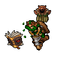
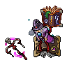

What is Tibia?
Tibia is one of the oldest and most successful massively multiplayer online role-playing games (MMORPG) created in Europe. In an MMORPG people from all over the world meet on a virtual playground to explore areas, solve tricky riddles and undertake heroic exploits.
For more than 25 years now, players have been visiting the medieval world of Tibia. At present, more than 500,000 players from all over the world inhabit the Tibian continent enjoying the numerous game features
Acting as knights, paladins, sorcerers or druids, players are faced with the challenge of developing the skills of their selected characters, exploring a large variety of areas and dangerous dungeons and interacting with other players on a social and diplomatic level. Besides the sophisticated chat tools it is especially the unique freedom players enjoy in Tibia that create an enormously immersive gaming experience.
- 
-

-

- 